写真から、
目を離さない。
露光量、シャドウ、色温度。マウスでスライダーを探すたびに、写真から目が離れます。JP-Knob16 なら、16 のパラメータがいつも同じ場所にある。写真を見たまま、思ったものにすぐ手が届きます。
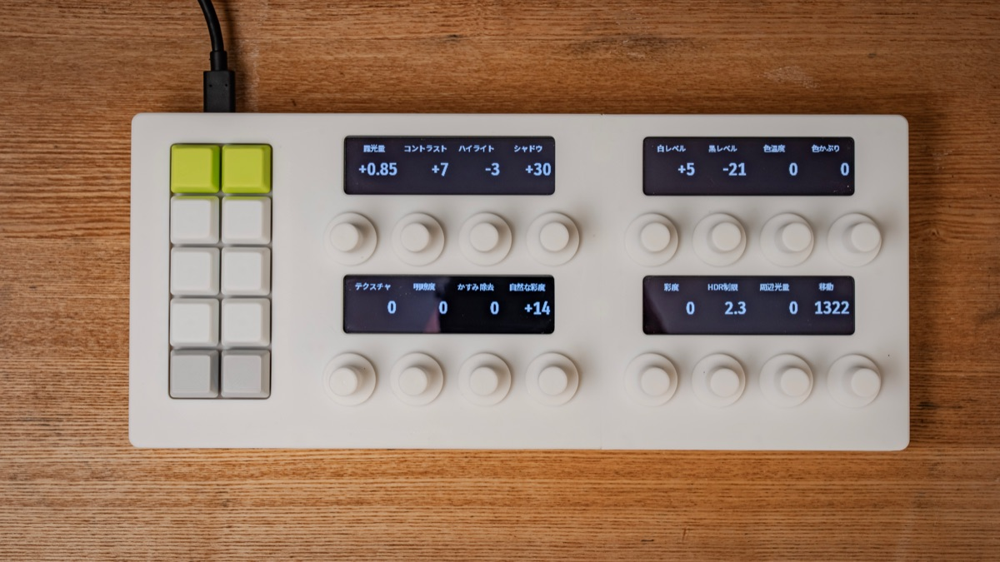
見るのは、写真だけでいい。
写真編集は、写真の変化を見ながら少しずつ追い込む作業です。なのにマウスでは、パラメータを変えるたびにスライダーへ目を移さなければなりません。
- 写真を見て、シャドウを上げたいと思う
- パネルからシャドウのスライダーを探す
- つまんで動かしながら、写真に目を戻す
- 次は色温度。またスライダーを探す…
- 写真を見て、シャドウを上げたいと思う
- シャドウのノブに手を伸ばして回す
- 次は色温度。写真を見たまま、隣のノブへ
- 決まったら、キーで次の写真へ
どのノブが何かは、手がすぐ覚えます。確かめたいときだけ、ノブの真上の OLED を見れば十分です。
さわってみてください。
ノブはスクロールかドラッグで回せます。回すと真上の OLED の値が変わり、上の写真に効きます。左のキーには「次の写真」「取り消し」などを割り当ててあります。ノブそのものには印も目盛りもありません。いまの値は OLED が教えてくれるので、ノブの向きを気にせず、どこからでも回せます。
キーの割り当て（デモ。左上から）: 前の写真・次の写真 ／ 取り消し・やり直し ／ ビフォー（押している間）・★ レート ／ このノブをリセット・全部リセット ／ 設定のコピー・貼り付け
手が覚えて、目は写真に。
画面の中のスライダーを、いつも同じ場所にある手元のノブとキーに置きかえるための道具です。
ノブの真上に、名前と値
3.12 インチ・256×64 の OLED を 4 枚。1 枚がノブ 4 本ぶんの名前と値を出します。日本語のラベルも、16 段階の濃淡でなめらかに表示します。
印のない 16 本のノブ
ノブに向きの印はありません。端もなく、どこから回しても今の値から増減するだけ。だから向きを見る必要がありません。1 回転 24 クリックの手応えで、押し込むとスイッチにもなります。
押し心地のいい、10 個のキー
スイッチは MX の茶軸。押した瞬間に軽い段差の手応えがあり、音は静かです。「次の写真」「取り消し」など、よく使う操作を好きに割り当てられます。ホットスワップなので、スイッチの差し替えもできます。
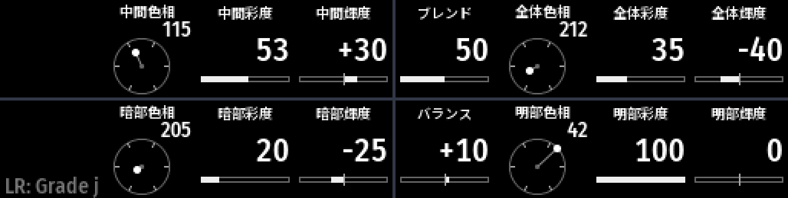
色はホイールで見せる
文字だけではありません。カラーグレーディングでは、色相のホイールや彩度・輝度のバーを OLED に描いて、いまの色を形で見せます。
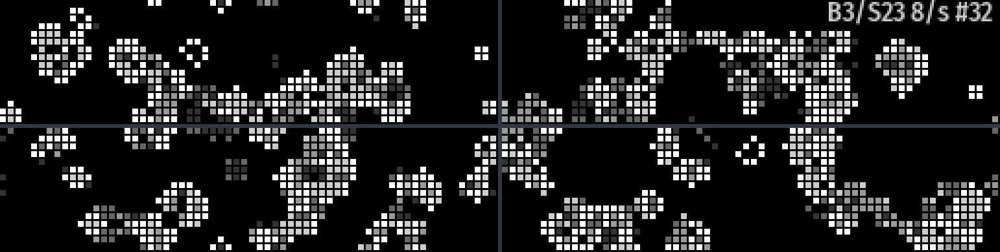
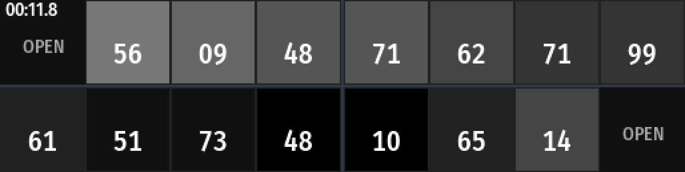
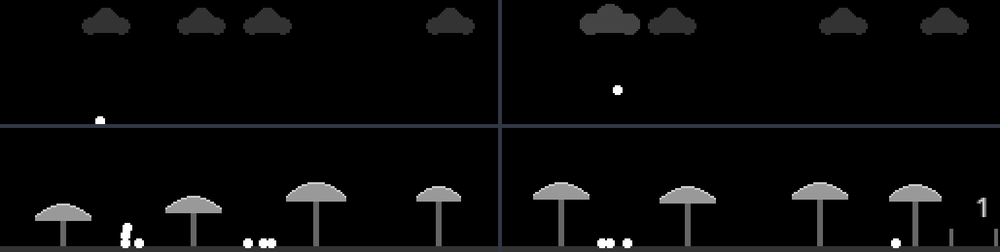
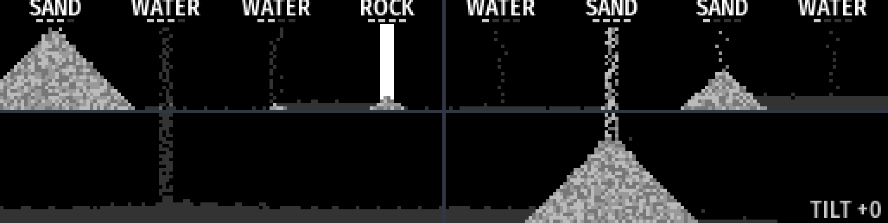
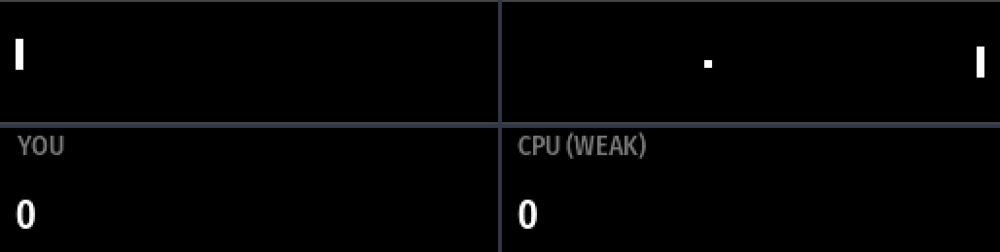
待っている間は、ゲーム機
アプリにつないでいない間は、キーで 8 本のミニゲームが遊べます。PONG、金庫破り、反射神経、ライフゲーム、砂遊びなど。OLED 4 枚をつないだ横長の画面で動きます。
USB-C 1 本だけ
電源も通信も USB-C ケーブル 1 本です。USB MIDI の標準規格に沿っているので、ドライバーは要りません。
アプリと話して動きます。
JP-Knob16 は値を自分で持ちません。対応アプリが名前と値を送り、本体はそれを表示して、ノブとキーの操作を返します。だから画面と手元の数字がいつも同じです。
パラメータの名前と今の値を、本体に送ります。
OLED に表示し、回した量と押したキーをアプリに返します。
写真を見たまま回す。よく使う操作はキーで。
試作機ができています。
写真は試作 1 号機です。白いケースは 3D プリントです。
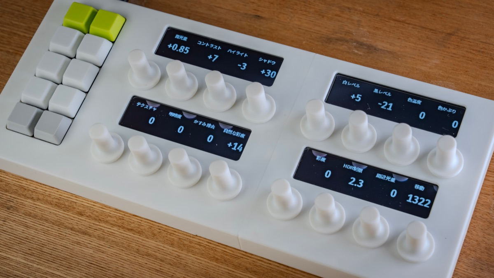
中身と、次の形。
次の版（v2）では、マイコンをキーの基板の裏に載せて、もう一段薄くします。図は設計中の 3D モデルです（色は実物と違います）。
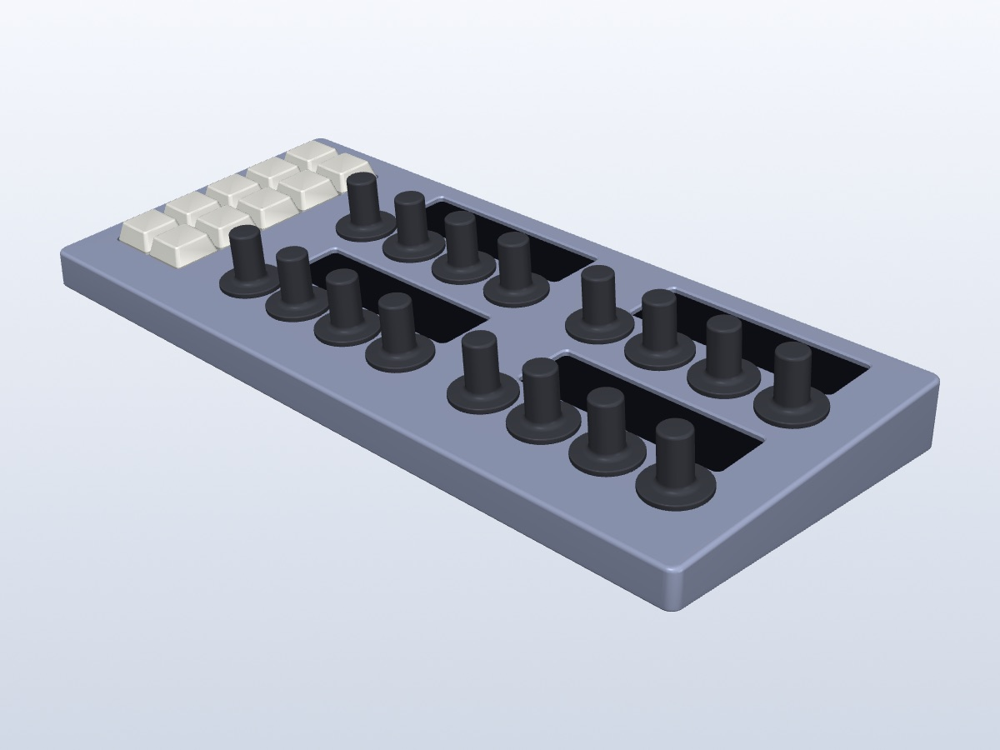
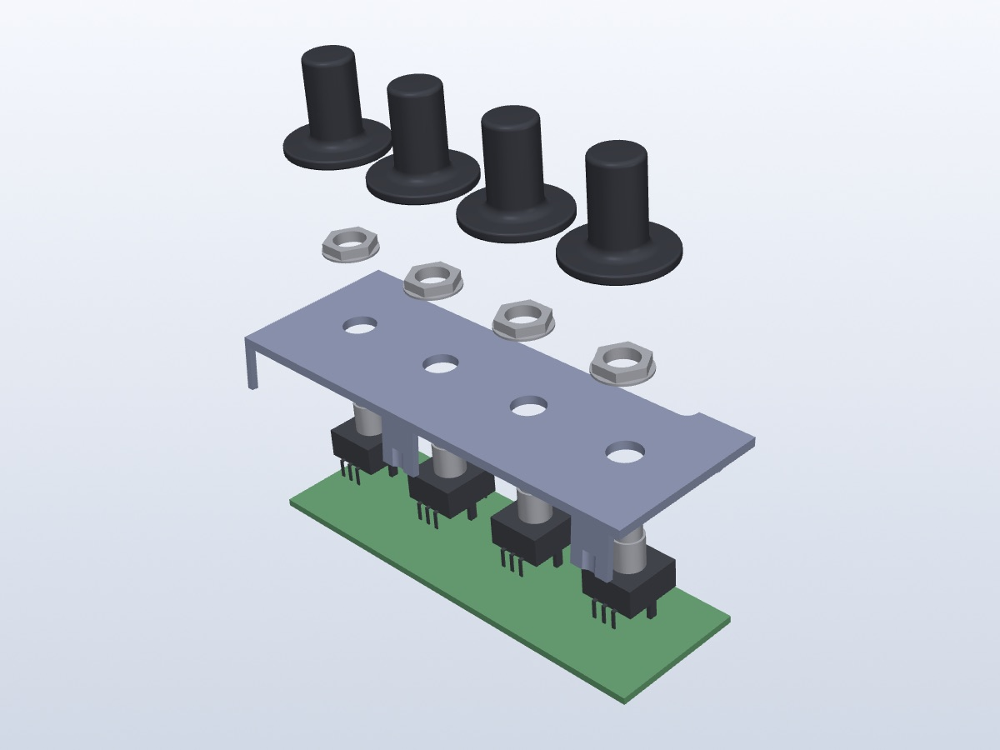
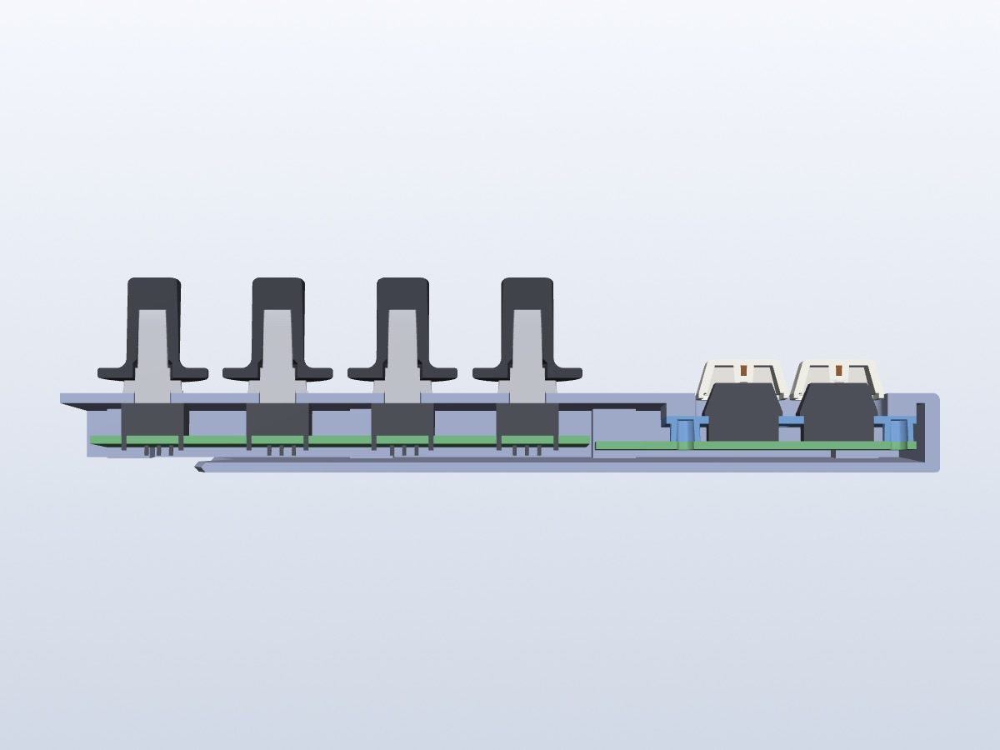
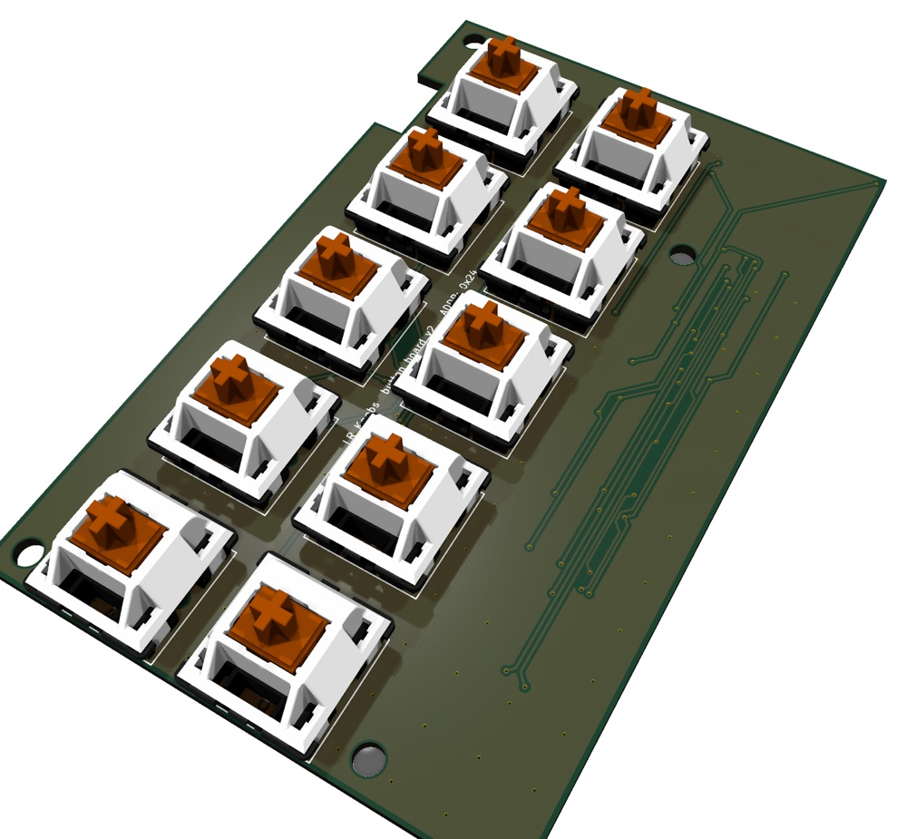
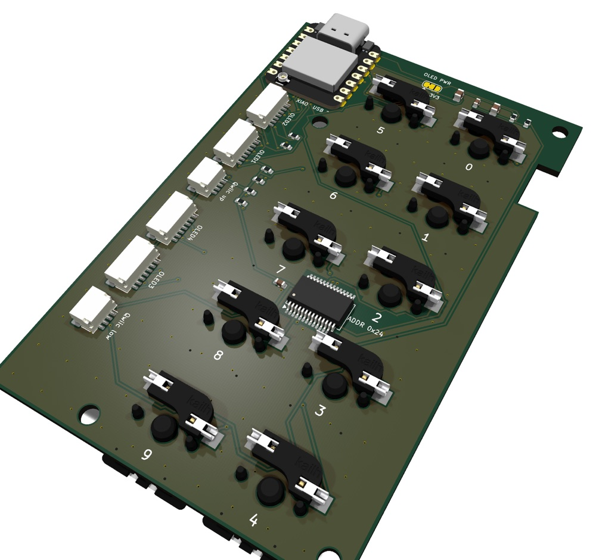
仕様
開発中の仕様です。変わることがあります。
- ノブ
- ロータリーエンコーダー × 16（2 段 × 8 列、24 クリック／回転、押し込みスイッチ付き）
- 表示
- 3.12 インチ OLED（256 × 64、16 階調）× 4
- キー
- MX 茶軸キースイッチ × 10（2 列 × 5 段、ホットスワップ）
「次の写真」「取り消し」など、任意の操作を割り当てられます - 接続
- USB-C（USB MIDI クラスコンプライアント）
- 電源
- USB バスパワー
- マイコン
- ESP32-S3
- 大きさ
- 291 × 125mm、厚さ 手前 13.6mm／奥 24.5mm （v2 の設計値）
- ケース
- 3D プリント
- 使い方
- macOS で、対応アプリと組み合わせて使います
開発状況
試作機は動いています。いまは、薄く・組み立てやすくする v2 を作っています。
-
01
試作 1 号機
OLED・ノブ・キーがそろって動いています。
完了 -
02
v2 の基板
マイコンをキー基板に載せ、部品を減らしました。
設計完了 -
03
v2 のケースとソフト
薄型ケースとファームウェアを作っています。
進行中 -
04
頒布
方法と価格は準備中です。
これから